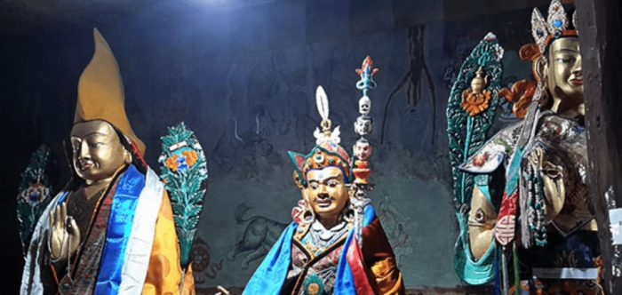
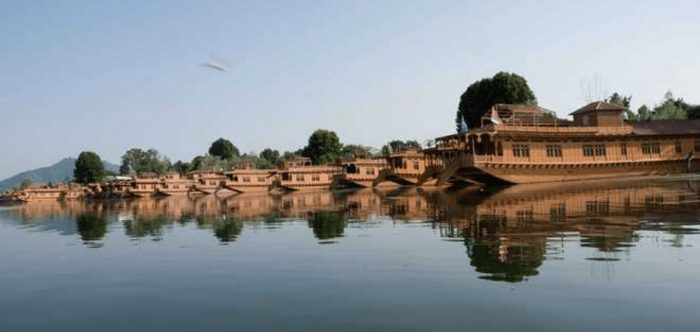
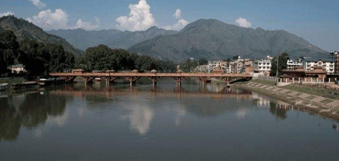
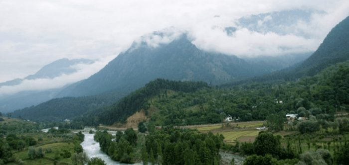
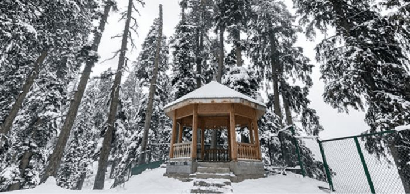
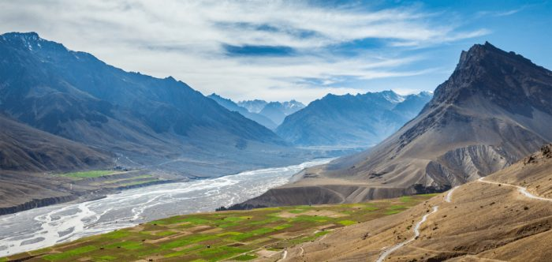
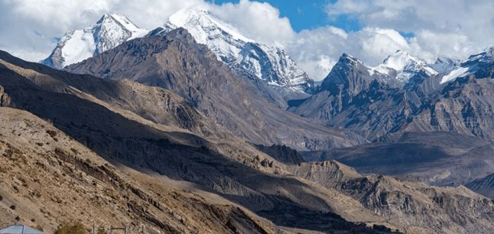
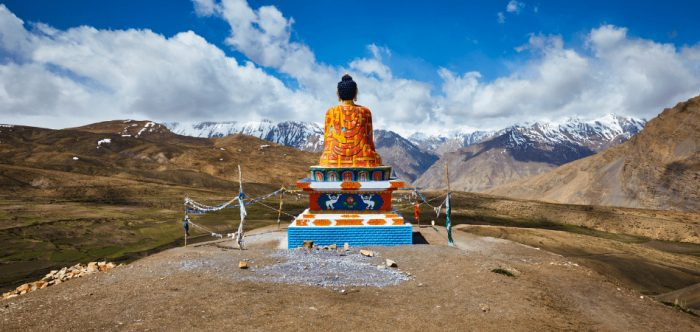

India
See all photos →Tigers at Ranthambore, Tadoba, Jim Corbett and Manas, leopards at Jawai and Jhalana, migratory birds at Bhigwan, and road journeys through Kashmir, Leh-Ladakh and the Spiti Valley.
Leh Ladakh 4 stories

Gulmarg to Leh-Ladakh via Sonmarg and Kargil
21 December 2017

Nice Nubra in Ladakh
26 December 2017

Ethereal Pangong Lake in Ladakh
3 January 2018

Mesmerizing Beauty of Leh-Ladakh accentuated with ubiquitous Monasteries
28 July 2018
Jawai 1 story

Ranthambore 4 stories

Ranthambore National Park – Day 1
12 June 2019

Tigers Galore at Ranthambore National Park Day 2
5 July 2019

Bengal Tigers at Ranthambore National Park Day 3
20 July 2019

Concluding Day at Ranthambore National Park – Day 4
2 August 2019
Jhalana 1 story

Manas National Park 3 stories

Manas National Park, Assam – Day 1
2 April 2019

Golden Langurs at Kakoijana, Assam, India
18 April 2019

Manas National Park to Bhutan Day 3
11 May 2019
Bhigwan 1 story

Kashmir 5 stories

Srinagar in strife – Houseboat No 5
14 August 2017
Pictures – Sight Seeing Srinagar
28 August 2017

Sight Seeing Srinagar in unprecedented Strife
28 September 2017

Visit Pahalgam, in throes of militancy
15 November 2017

Mesmerizing Kashmir in Winter
5 January 2019
Jim Corbett 1 story

Spiti Valley 3 stories

Picturesque Spiti Valley in Himachal Pradesh, India – Part 1
26 November 2021

Tabo to Kaza in Picturesque Spiti Valley – Part 2
24 March 2022

Langza to Manali through Picturesque Spiti Valley – Part 3
30 December 2021